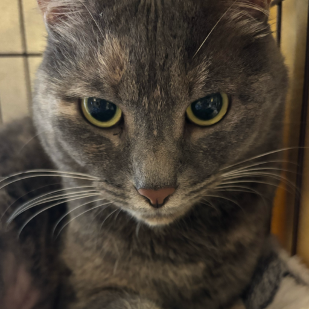
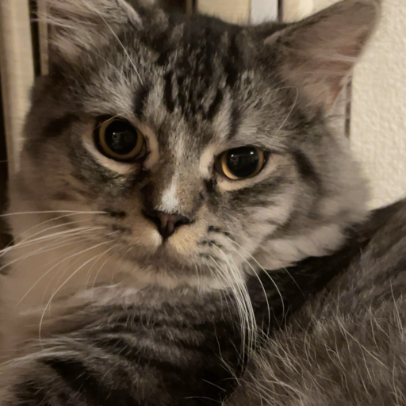

くーちゃん
甘えてくるタイプの猫。 近くに来てくれるとかなり嬉しい。
推し：私、父ボタンを押すと、猫からひとこともらえます。

甘えてくるタイプの猫。 近くに来てくれるとかなり嬉しい。
推し：私、父
噛んでくる問題児。 でもそこも含めて猫なので、なんだかんだかわいい。
推し：母、弟TODAY'S CAT
今日の猫タイプを占えます。
近くに来るだけで勝ち。 何もしてなくても癒し効果があります。
痛いけど、猫なので仕方ない。 問題児でもかわいい時はかわいい。
完璧じゃなくても許されるところ。 むしろ完璧じゃないからかわいい。
猫の部屋は、意味があるようであまりない場所です。 でも、こういう場所があるとサイトが少しやわらかくなります。